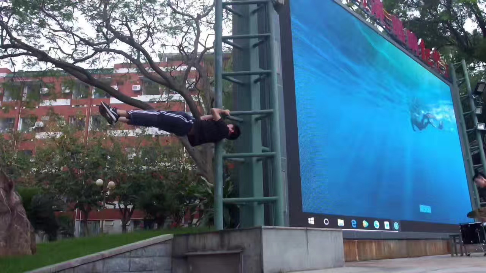
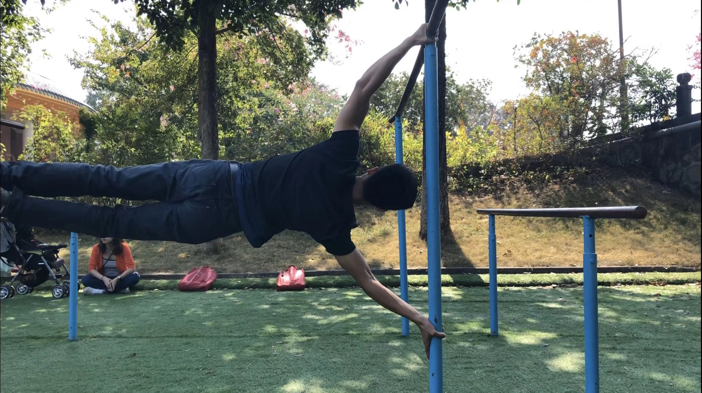
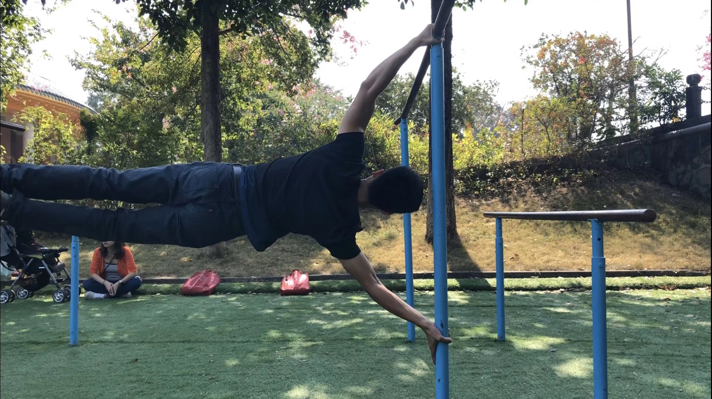
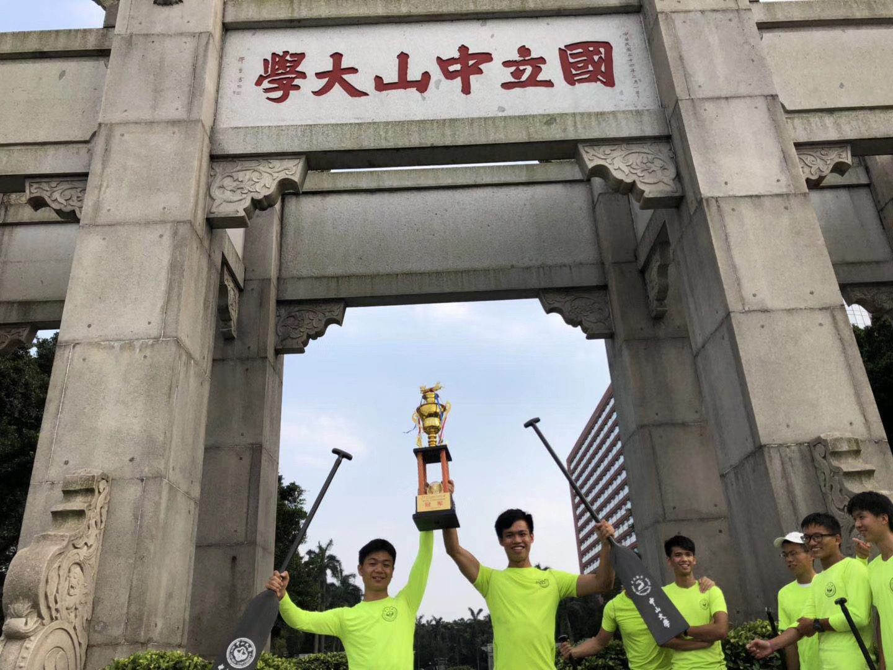
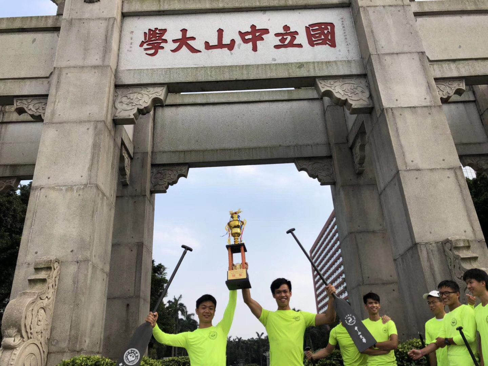

Minrui Xu (徐敏锐)
 Ph.D. Student
Ph.D. Student
Trustworthy Federated Ubiquitous Learning (TrustFUL) Research Lab
Nanyang Technological University
Office:CNCL, Block N4-B2a-1, 50 Nanyang Ave, Singapore 639798.
Email:[MINRUI001 AT e.ntu.edu.sg]
Google Scholar
Short Bio
Minrui Xu received B.S. degree from Sun Yat-sen University (中山大学), Guangzhou, China, in 2021 supervised by Prof. Wuhui Chen in InplusLab. He is currently working toward the Ph.D. degree in the School of Computer Science and Engineering, Nanyang Technological University, Singapore, supervised by Prof. Dusit Niyato, Fellow of IEEE.
His research interests broadly focus on Metaverse, mobile edge computing, deep reinforcement learning and mechanism design. He initiated several new fields such as edge-enabled Metaverse, quantum-secured space-air-ground integrated networks (SAGIN), and mobile quantum computing.
Education Background
-
Ph.D.: Nanyang Technological University, Sep. 2021 - Now
Supervisor: Prof. Dusit Niyato, IEEE Fellow.
-
B.S.: Sun Yat-sen University, Sep. 2017 - Jun. 2021
Supervisor: Prof. Wuhui Chen.
Papers
Highlights
Mobile Edge-Cloud Generative AI
-
[Preprint] Unleashing the power of edge-cloud generative ai in mobile networks: A survey of aigc services,
Minrui Xu, Hongyang Du, Dusit Niyato, Jiawen Kang, Zehui Xiong, Shiwen Mao, Zhu Han, Abbas Jamalipour, Dong In Kim, Xuemin (Sherman) Shen, Victor C. M. Leung, and H. Vincent Poor.
arXiv preprint arXiv:2303.16129, 2023.
-
[Preprint] Sparks of GPTs in Edge Intelligence for Metaverse: Caching and Inference for Mobile AIGC Services,
Minrui Xu, Dusit Niyato, Hongliang Zhang, Jiawen Kang, Zehui Xiong, Shiwen Mao, and Zhu Han.
arXiv preprint arXiv:2304.08782, 2023.
-
[Preprint] AI-Generated 6G Internet Design: A Diffusion Model-based Learning Approach,
Yudong Huang, Minrui Xu, Xinyuan Zhang, Dusit Niyato, Zehui Xiong, Shuo Wang, Tao Huang.
arXiv preprint arXiv:2303.13869, 2023.
Edge-enabled Metaverse
-
[COMST] A Full Dive into Realizing the Edge-enabled Metaverse: Visions, Enabling Technologies, and Challenges,
Minrui Xu, Wei Chong Ng, Wei Yang Bryan Lim, Jiawen Kang, Zehui Xiong, Dusit Niyato, Qiang Yang, Xuemin Sherman Shen, and Chunyan Miao.
IEEE Communications Surveys & Tutorials, accepted.
-
[Preprint] EPViSA: Efficient Auction Design for Real-time Physical-Virtual Synchronization in the Metaverse,
Minrui Xu, Dusit Niyato, Benjamin Wright, Hongliang Zhang, Jiawen Kang, Zehui Xiong, Shiwen Mao, and Zhu Han.
in arXiv preprint arXiv:2211.06838.
-
[Preprint] Generative AI-empowered Simulation for Autonomous Driving in Vehicular Mixed Reality Metaverses,
Minrui Xu, Dusit Niyato, Junlong Chen, Hongliang Zhang, Jiawen Kang, Zehui Xiong, Shiwen Mao, and Zhu Han.
arXiv preprint arXiv:2302.08418, 2023.
Mobile Edge/Cloud-Quantum Computing
-
[ICC] Learning-based Sustainable Multi-User Computation Offloading for Mobile Edge-Quantum Computing,
Minrui Xu, Dusit Niyato, Jiawen Kang, Zehui Xiong, Mingzhe Chen.
Proceedings of IEEE ICC , Rome, Italy, 28 May - 1 Jun 2023.
Journal and Magazine
-
[Network] When Quantum Information Technologies Meet Blockchain in Web 3.0,
Minrui Xu, Xiaoxu Ren, Dusit Niyato, Jiawen Kang, Chao Qiu, Zehui Xiong, Xiaofei Wang, and Victor Leung.
submitted to IEEE Network, accepted., 2022.
-
[ComMag] DQC2O: Distributed Quantum Computing for Collaborative Optimization in Future Networks,
Napat Ngoenriang,Minrui Xu, Jiawen Kang, Dusit Niyato, Han Yu, and Xuemin Sherman Shen.
IEEE Communications Magazine, accepted.
-
[JSTSP] Privacy-preserving Intelligent Resource Allocation for Federated Edge Learning in Quantum Internet,
Minrui Xu, Dusit Niyato, Zhaohui Yang, Zehui Xiong, Jiawen Kang, Dong In Kim, and Xuemin (Sherman) Shen.
IEEE Journal of Selected Topics in Signal Processing, accepted.
-
[JSAC] Compact Learning Model for Dynamic Off-chain Routing in Blockchain-based IoT,
Zhenni Li, Wensheng Su, Minrui Xu, Rong Yu, Dusit Niyato, and Shengli Xie.
IEEE Journal on Selected Areas in Communications, vol. 40, no. 12, pp. 3615-3630, Dec. 2022.
-
[WCM] Quantum-Secured Space-Air-Ground Integrated Networks: Concept, Framework, and Case Study,
Minrui Xu, Dusit Niyato, Zehui Xiong, Jiawen Kang, Xianbin Cao, Xuemin (Sherman) Shen, and Chunyan Miao.
IEEE Wireless Communications, accepted.
-
[TNSE] Secure and Reliable Transfer Learning Framework for 6G-Enabled Internet of Vehicles,
Jiawen Kang, Xuandi Li, Jiangtian Nie, Yi Liu, Minrui Xu, Zehui Xiong, Dusit Niyato, Qiang Yan.
IEEE Transactions on Network Science and Engineering, vol. 9, no. 5, pp. 2966-2977, May 2022.
-
[WCM] Secure and Reliable Transfer Learning Framework for 6G-Enabled Internet of Vehicles,
Minrui Xu, Dinh Thai Hoang, Jiawen Kang, Dusit Niyato, Qiang Yan, and Dong In Kim.
IEEE Wireless Communications, vol. 29, no. 4, pp. 132-139, Aug. 2022. (Undergraduate Publication)
-
[IoTJ] Multiagent Federated Reinforcement Learning for Secure Incentive Mechanism in Intelligent Cyber–Physical Systems,
Minrui Xu, Jialiang Peng, BB Gupta, Jiawen Kang, Zehui Xiong, Zhenni Li, and Ahmed A Abd El-Latif.
IEEE Internet of Things Journal, vol. 9, no. 22, pp. 22095-22108, Nov. 2022. (Undergraduate Publication)
-
[IoTJ] NOMA-Enabled Cooperative Computation Offloading for Blockchain-Empowered Internet of Things: A Learning Approach,
Zhenni Li, Minrui Xu, Jiangtian Nie, Jiawen Kang, Wuhui Chen, and Shengli Xie.
IEEE Internet of Things Journal, vol. 8, no. 4, pp. 2364-2378, Feb. 2021. (Undergraduate Publication)
Conferneces
-
[MetaCom] Generative AI-empowered Effective Physical-Virtual Synchronization in the Vehicular Metaverse,
Minrui Xu, Dusit Niyato, Hongliang Zhang, Jiawen Kang, Zehui Xiong, Shiwen Mao, and Zhu Han.
Proceedings of IEEE International Conference on Metaverse Computing, Networking and Applications (MetaCom), Kyoto, Japan, 26-28 June 2023.
-
[ICC] Learning-based Sustainable Multi-User Computation Offloading for Mobile Edge-Quantum Computing,
Minrui Xu, Dusit Niyato, Jiawen Kang, Zehui Xiong, Mingzhe Chen.
Proceedings of IEEE ICC , Rome, Italy, 28 May - 1 Jun. 2023.
-
[WWW] Multiple-Agent Deep Reinforcement Learning for Avatar Migration in Vehicular Metaverses,
Junlong Chen , Jiangtian Nie, Minrui Xu, Lingjuan Lyu , Zehui Xiong , Jiawen Kang , Yongju Tong , Wenchao Jiang.
Proceedings of WWW Companion: Companion Proceedings of the ACM Web Conference 2023 , Austin, Texas, USA, April-May 2023. [Best Paper Awards]
-
[ICNC] Adaptive Resource Allocation in Quantum Key Distribution (QKD) for Federated Learning,
Rakpong Kaewpuang, Minrui Xu, Dusit Niyato, Han Yu, Zehui Xiong, Xuemin Sherman Shen.
Proceedings of International Conference on Computing, Networking and Communications (ICNC) , Honolulu, Hawaii, USA, 20-22 Feb. 2023.
-
[GlobeCom] Stochastic Resource Allocation in Quantum Key Distribution for Secure Federated Learning,
Minrui Xu,, Wei Chong Ng, Dusit Niyato, Han Yu, Chunyan Miao, Dong In Kim, and Xuemin Sherman Shen.
Proceedings of IEEE GLOBECOM , Rio de Janeiro, Brazil, from 4-8 December 2022.
-
[GlobeCom] Performance Analysis of Jammer-Aided Covert RIS-NOMA Systems,
Yanyu Cheng, Jianyuan Lu, Dusit Niyato, Biao Lyu, Minrui Xu, Shunmin Zhu.
Proceedings of IEEE GLOBECOM , Rio de Janeiro, Brazil, from 4-8 December 2022.
-
[ICC] Wireless edge-empowered metaverse: A learning-based incentive mechanism for virtual reality,
Minrui Xu, Dusit Niyato, Jiawen Kang, Zehui Xiong, Chunyan Miao, and Dong In Kim.
in Proceedings of IEEE ICC, Seoul, South Korea, 16-20 May 2022.
Working Papers
-
[Preprint] Sparks of GPTs in Edge Intelligence for Metaverse: Caching and Inference for Mobile AIGC Services,
Minrui Xu, Dusit Niyato, Hongliang Zhang, Jiawen Kang, Zehui Xiong, Shiwen Mao, and Zhu Han.
arXiv preprint arXiv:2304.08782, 2023.
-
[Preprint] Sustainable AIGC Workload Scheduling of Geo-Distributed Data Centers: A Multi-Agent Reinforcement Learning Approach,
Siyue Zhang, Minrui Xu, Wei Yang Bryan Lim, and Dusit Niyato.
arXiv preprint arXiv:2304.07948, 2023.
-
[Preprint] Entangled Pair Resource Allocation under Uncertain Fidelity Requirements,
Rakpong Kaewpuang, Minrui Xu, Stephen John Turner, Dusit Niyato, Han Yu, Dong In Kim.
arXiv preprint arXiv:2304.04425, 2023.
-
[Preprint] AI-Generated 6G Internet Design: A Diffusion Model-based Learning Approach,
Yudong Huang, Minrui Xu, Xinyuan Zhang, Dusit Niyato, Zehui Xiong, Shuo Wang, Tao Huang.
arXiv preprint arXiv:2303.13869, 2023.
-
[Preprint] Building Resilient Web 3.0 with Quantum Information Technologies and Blockchain: An Ambilateral View,
Xiaoxu Ren, Minrui Xu, Dusit Niyato, Jiawen Kang, Zehui Xiong, Chao Qiu, and Xiaofei Wang.
arXiv preprint arXiv:2303.13050, 2023.
-
[Preprint] Generative AI-empowered Simulation for Autonomous Driving in Vehicular Mixed Reality Metaverses,
Minrui Xu, Dusit Niyato, Junlong Chen, Hongliang Zhang, Jiawen Kang, Zehui Xiong, Shiwen Mao, and Zhu Han.
arXiv preprint arXiv:2302.08418, 2023.
-
[Preprint] EPViSA: Efficient Auction Design for Real-time Physical-Virtual Synchronization in the Metaverse,
Minrui Xu, Dusit Niyato, Benjamin Wright, Hongliang Zhang, Jiawen Kang, Zehui Xiong, Shiwen Mao, and Zhu Han.
arXiv preprint arXiv:2211.06838, 2022.
-
[Preprint] Learning-based Sustainable Multi-User Computation Offloading for Mobile Edge-Quantum Computing,
Minrui Xu, Dusit Niyato, Jiawen Kang, Zehui Xiong, Mingzhe Chen.
arXiv preprint arXiv:2211.06681, 2022.
-
[Preprint] Holographic-Type Communication for Digital Twin: A Learning-based Auction Approach,
XiuYu Zhang, Minrui Xu, Rui Tan, and Dusit Niyato.
arXiv preprint arXiv:2211.01016, 2022.
-
[Preprint] Stochastic Qubit Resource Allocation for Quantum Cloud Computing,
Rakpong Kaewpuang, Minrui Xu, Dusit Niyato, Han Yu, Zehui Xiong, and Jiawen Kang.
arXiv preprint arXiv:2210.12343, 2022.
-
[Preprint] Cooperative Resource Management in Quantum Key Distribution (QKD) Networks for Semantic Communication,
Rakpong Kaewpuang, Minrui Xu, Wei Yang Bryan Lim, Dusit Niyato, Han Yu, Jiawen Kang, and Xuemin Sherman Shen.
arXiv preprint arXiv:2209.11957, 2022.
-
[Preprint] Optimal Stochastic Resource Allocation for Distributed Quantum Computing,
Napat Ngoenriang, Minrui Xu, Sucha Supittayapornpong, Dusit Niyato, and Han Yu.
arXiv preprint arXiv:2210.02886, 2022.
Teaching Experience
- Teaching Assistant, Object-oriented Programming, Fall 2022. Teaching Assistant, Computer Networks, Spring 2023.
Academic Service
PC Member / Journal Reviewer
- Reviewer for IEEE Communications Surveys & Tutorials (IEEE COMST)
- Reviewer for IEEE Journal on Selected Areas in Communications (IEEE JSAC)
- Reviewer for IEEE Network Magazine
- Reviewer for IEEE Communication Letter
- Reviewer for IEEE Transactions on Green Communications and Networking (IEEE TGCN)
- Reviewer for IEEE Internet of Things Journal (IEEE IoTJ)
- Reviewer for IEEE Transactions on Cognitive Communications and Networking (IEEE TCCN)
- Reviewer for IEEE Transactions on Vehicular Technology (IEEE TVT)
- Reviewer for IEEE Transactions on Wireless Communications (IEEE TWC)
- Reviewer for IEEE IEEE Wireless Communications
- Reviewer for Journal of Network and Computer Applications (JNCA)
- Reviewer for IEEE Systems Journal
- Reviewer for IEEE WCNC, ICC
Hobbies
Street Workout
I have been interested in street workout for almost ten years.
 

Dragon Boat
We (Dragon Boat Racing Team, SYSU) won the champion in 2019 Guangzhou International Dragon Boat Invitational Tournament, which was held on the Zhujiang River. 


Sponsors
I sincerely thank these sponsors for providing financial support for my research: